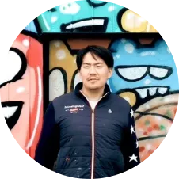
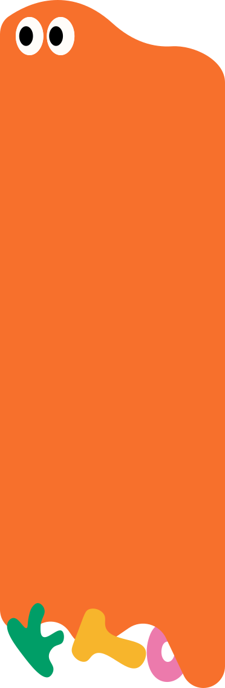

怒られないらくがき部屋
真っ白なお部屋の中で、
壁も！床も！家具も！
ぜ〜んぶ自由におえかきできるよ！
「ここに描いちゃダメ！」は一切なし。
怒られる心配もないから、思いっきり楽しめる！
大きな絵を描いたり、
好きな色でいっぱいにしたり、
自分だけの世界をつくっちゃおう！
まっ白な空間が、みんなのアイデアで
どんどん変わっていくよ。
さあ、やってみたい！を思いっきり楽しもう！
ライブパフォーマンス
アーティストの先生といっしょに、
大きな作品をつくろう！
大きなパネルに自由におえかきすると…
プロのアーティストがその場で大変身！
自分の絵がどう変わるかはお楽しみ！
世界にひとつの作品ができあがるよ！
アーティスト：隈部裕太郎氏
場所：福岡市美術館 アートスタジオ
（怒られない落書き部屋内）

先着
60名
世界にひとつだけの
オリジナルシール作成
自分で描いた絵が、シールになるよ！
できあがったシールは、お家に持って帰れる！
家族や友だちに見せて、
うれしい気持ちを分けよう！
作り方は簡単！
絵を描いたら、スキャンしてプリントするよ。
さいごにハサミでチョキチョキきったら、
オリジナルシールのできあがり！
先着
60名
今日から誰もがアーティスト
オリジナルTシャツ作成
今日からキミもアーティスト！
自分だけのオリジナルTシャツをつくれるよ！
自由に描いた絵が、その日のうちにTシャツに!
できあがったら、そのまま着て
みんなに見せちゃおう!

Tシャツ展示

子どもたちが思い描く
これからの福岡の姿や
こんなまちになってほしい
という想いを
自由に表現してください
- 応募してくれたTシャツが、展示されるよ!
- みんなの作品が、未来の福岡を考える
- ヒントになるかも！？